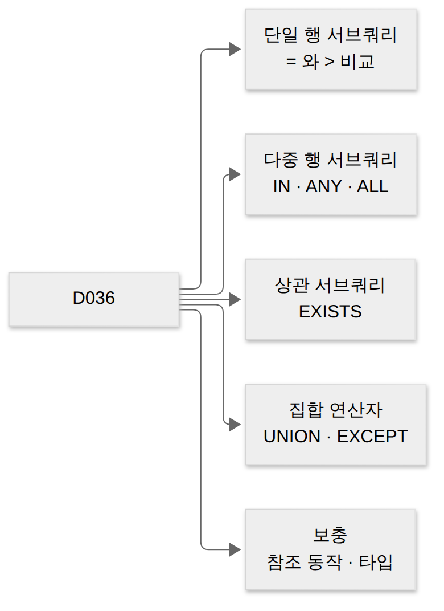
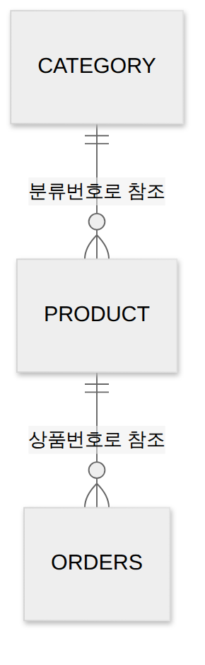
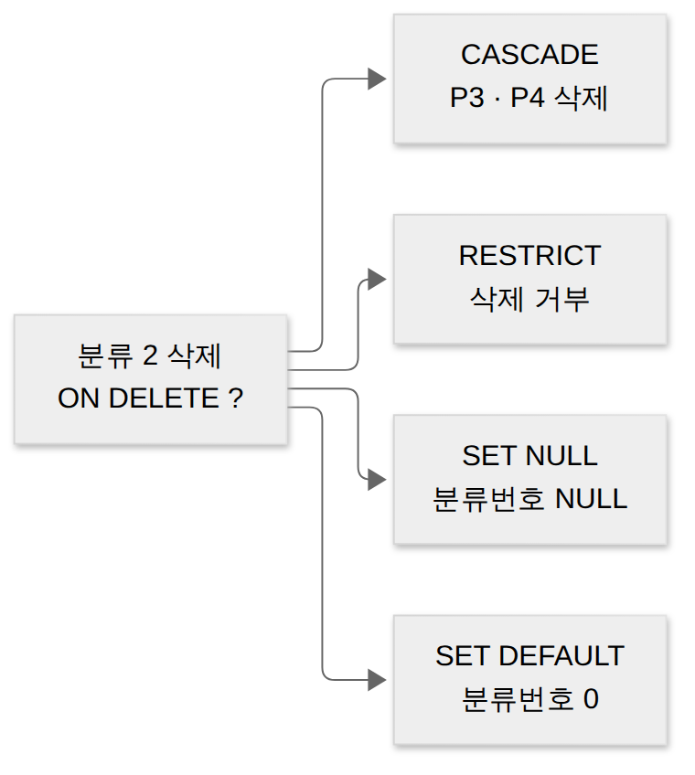

D036 · 서브쿼리(단일·다중 행·EXISTS·상관)와 집합 연산자 + 참조 동작·데이터 타입 보충
B2 지난 D035에서는 쪼갠 표를 옆으로 붙이는 조인을 봤어요. 오늘은 SQL 안에 SQL을 넣는 서브쿼리와, 두 결과를 아래로 쌓는 집합 연산자를 봐요. 그리고 지난 범위에서 설명이 모자랐던 참조 동작(SET NULL · SET DEFAULT)과 데이터 타입을 보충해요. 예시는 동네 빵집 ‘소금빵연구소’의 온라인 예약 DB 하나로 끝까지 가요.
- 단일 행(= · >)과 다중 행(IN · ANY · ALL) 서브쿼리를 구별하고, 결과 행을 손으로 구할 수 있다
- 상관 서브쿼리와 EXISTS · NOT EXISTS가 바깥 행마다 동작하는 방식을 비상관 서브쿼리와 구별할 수 있다
- UNION · UNION ALL · INTERSECT · EXCEPT(MINUS)의 결과 행 수와 열 개수 · 타입 조건을 구별할 수 있다
- 부모 삭제 시 CASCADE · RESTRICT · NO ACTION · SET NULL · SET DEFAULT의 결과와, CHAR · VARCHAR · NUMBER(p,s) · DATE의 차이를 구별할 수 있다
0. 기본 전제와 용어 사전
SQL의 SELECT는 늘 표를 돌려줘요. 행이 하나뿐이어도, 열이 하나뿐이어도 표예요. 오늘 배우는 서브쿼리와 집합 연산자는 이 “결과 표”를 다시 재료로 쓰는 기술이라, 결과 표가 몇 행 몇 열인지 세는 습관이 가장 중요해요. SQL은 무엇을 물어도 표 한 장으로 대답하는, 보고서 양식밖에 모르는 신입 같은 존재예요.
| 용어 | 뜻 | 소금빵연구소 예 |
|---|---|---|
| 서브쿼리 | 다른 SQL 문 안에 괄호로 들어간 SELECT | (SELECT 가격 FROM 상품 WHERE 이름='크루아상') |
| 메인(바깥) 쿼리 | 서브쿼리를 품고 있는 바깥 SELECT | 가격이 그 값보다 큰 상품 찾기 |
| 단일 행 · 다중 행 | 서브쿼리 결과가 1행인지, 2행 이상일 수 있는지 | 크루아상 가격(1행) · 빵 가격들(2행) |
| 비상관 · 상관 | 안쪽이 바깥 열을 쓰지 않음 · 바깥 열을 씀 | 고정 값 3500 · “내 분류의” 평균 |
| 결과 집합 | SELECT가 돌려준 행들의 묶음 | 10월 손님 명단 4행 |
| 외래키 · 참조 동작 | 다른 표 기본키를 가리키는 열 · 부모가 바뀔 때 자식 처리 규칙 | 상품.분류번호 → 분류 · ON DELETE CASCADE |
| NULL | 값이 없음(모름). 0도 빈 문자열도 아님 | 분류가 아직 정해지지 않은 상품 |
NULL과의 비교는 참도 거짓도 아닌 UNKNOWN이 된다는 점은 D033에서 봤어요. WHERE는 참인 행만 남기니까 UNKNOWN 행은 빠져요. 오늘 NOT IN 함정이 바로 이 규칙에서 나와요.
1. 큰 그림 — 질문 안의 질문, 결과 위의 결과
앞 0장에서 결과는 늘 표라고 했죠. 빵집 사장님이 “크루아상보다 비싼 상품 보여 줘”라고 하면, 먼저 크루아상 가격을 알아야 그다음 질문을 할 수 있어요. 두 번 조회해 사람이 값을 옮겨 적는 대신, 첫 질문을 괄호에 넣어 두 번째 질문 안에 심는 것이 서브쿼리예요.
서브쿼리는 바깥 쿼리가 막내 직원에게 “크루아상 얼마인지 알아 와” 하고 심부름을 보내는 일이에요. 막내가 3500을 들고 돌아와야 사장님 문장이 완성돼요. 반면 “10월 손님과 11월 손님을 한 명단으로”처럼 같은 모양의 결과 두 개를 합치는 일은 집합 연산자가 맡아요.

어제 본 조인까지 합치면 “두 가지를 합치는” 방법이 셋이에요. 조인은 표를 옆으로 붙여 열을 늘리고, 집합 연산은 결과를 아래로 쌓아 행을 늘려요. 서브쿼리는 아예 합치지 않고, 안쪽 결과를 바깥 조건의 재료로만 써요. 그래서 서브쿼리 쪽 표의 열은 최종 결과에 나오지 않아요.
한 장 요약 — 세 도구는 결과 모양이 달라요.
| 도구 | 하는 일 | 결과 모양 |
|---|---|---|
| 조인(D035) | 조건에 맞는 행을 옆으로 이어 붙임 | 열이 늘어남 |
| 서브쿼리 | 안쪽 결과를 바깥 조건 · 칸 · 표의 재료로 씀 | 바깥 쿼리의 열만 나옴 |
| 집합 연산자 | 열 구성이 같은 두 결과를 위아래로 합침 | 행이 늘거나 줄어듦 |
오늘 사례는 소금빵연구소의 테이블 세 개와 손님 명단 두 개예요. 분류(0 미분류, 1 빵, 2 케이크, 3 음료), 상품, 주문이고, 상품은 분류번호로 분류를, 주문은 상품번호로 상품을 참조해요.
| 상품번호 | 이름 | 분류번호 | 가격 |
|---|---|---|---|
| P1 | 소금빵 | 1 | 3000 |
| P2 | 크루아상 | 1 | 3500 |
| P3 | 치즈케이크 | 2 | 6000 |
| P4 | 딸기케이크 | 2 | 7000 |
| P5 | 아메리카노 | 3 | 2500 |
| 주문번호 | 손님 | 상품번호 |
|---|---|---|
| 101 | 하나 | P1 |
| 102 | 하나 | P3 |
| 103 | 두리 | P1 |
| 104 | 세찌 | P5 |
| 105 | 두리 | P2 |
손님 명단은 10월손님(이름) = 하나, 두리, 두리, 세찌(4행)와 11월손님(이름) = 두리, 네오, 네오(3행)예요. 두리가 10월에 두 번 들어 있는 건 방문 기록을 그대로 옮겼기 때문이에요. 이 중복이 장면 4에서 결과를 가르는 열쇠가 돼요.

"10월손님"처럼 큰따옴표로 감싸요.→ 이 장면의 결과물: 세 가지 합치기 방법과 오늘의 데이터. 그래서 다음 장면은 가장 단순한 서브쿼리, 답이 하나인 심부름이에요.
2. 장면 1 — 답이 하나인 심부름 (단일 행 서브쿼리)
앞 장면에서 서브쿼리를 “조건의 재료”라고 했어요. 재료가 값 하나라면 일반 상수처럼 쓰면 돼요. 단일 행 서브쿼리는 결과가 한 행(보통 한 칸)인 서브쿼리이고, 바깥 쿼리는 그 값을 비교 연산자 오른쪽에 둬요.
SELECT 이름, 가격
FROM 상품
WHERE 가격 > (SELECT 가격 FROM 상품 WHERE 이름 = '크루아상');
-- 안쪽: 3500 → 바깥: 가격 > 3500 → 치즈케이크 6000, 딸기케이크 7000 (2행)안쪽 질의가 바깥 열을 전혀 쓰지 않으니 이 서브쿼리는 비상관이에요. DB는 안쪽을 한 번 계산해 3500을 얻고, 그 값을 바깥 WHERE의 상수 자리에 넣은 것처럼 바깥을 실행해요. 손으로 풀 때도 괄호 안부터 값을 적어 두면 실수가 없어요.
답이 여러 개 오면 — 오류
단일 행 비교 연산자는 값 하나만 받을 수 있어요. 숫자 하나를 물었는데 영수증 뭉치를 들고 오면, = 비교는 체해서 오류를 냅니다. 아래 안쪽 질의는 케이크가 두 개라 6000과 7000 두 행을 돌려주고, 실행 시점에 오류가 나요.
SELECT 이름 FROM 상품
WHERE 가격 = (SELECT 가격 FROM 상품 WHERE 분류번호 = 2); -- 오류: 서브쿼리가 2행
SELECT 이름 FROM 상품
WHERE 가격 IN (SELECT 가격 FROM 상품 WHERE 분류번호 = 2); -- 치즈케이크, 딸기케이크반대로 안쪽 결과가 0행이면 오류가 아니라 NULL로 취급돼요. 그러면 가격 > NULL은 UNKNOWN이라 바깥 결과도 0행이에요. 오류와 빈 결과는 다른 증상이니 구별해 두세요.
=·> 같은 단일 행 연산자를 쓰면 오류예요. 이때는 IN · ANY · ALL 같은 다중 행 연산자로 바꿔야 해요.서브쿼리가 놓이는 세 자리
서브쿼리는 WHERE에만 들어가는 게 아니에요. 놓이는 자리에 따라 이름과 돌려줘야 하는 모양이 달라요. 스칼라 서브쿼리는 SELECT 절에 들어가 행마다 값 하나를 만들고, 인라인 뷰는 FROM 절에 들어가 임시 테이블처럼 쓰여요.
-- SELECT 절: 스칼라 서브쿼리 (상품마다 주문 수 한 칸)
SELECT 이름,
(SELECT COUNT(*) FROM 주문 o WHERE o.상품번호 = p.상품번호) AS 주문수
FROM 상품 p; -- 소금빵 2, 크루아상 1, 치즈케이크 1, 딸기케이크 0, 아메리카노 1
-- FROM 절: 인라인 뷰 (분류별 평균 표를 만들어 조인)
SELECT c.분류명, a.평균가
FROM 분류 c JOIN (SELECT 분류번호, AVG(가격) AS 평균가
FROM 상품 GROUP BY 분류번호) a
ON c.분류번호 = a.분류번호; -- 빵 3250, 케이크 6500, 음료 2500스칼라 서브쿼리는 행마다 꼭 값 하나여야 해요. 딸기케이크처럼 주문이 없으면 COUNT가 0을 돌려주니 문제없지만, 안쪽이 2행을 내면 오류예요. 인라인 뷰는 이름이 “뷰”지만 따로 저장되지 않고 그 쿼리 안에서만 살아요. 저장되는 뷰는 내일 D037에서 봐요.
= 서브쿼리로 한쪽 표의 키를 고른 뒤, 다른 표에서 그 키의 값을 묻는 결과값 문제가 나와요. 함정은 바깥 표의 다른 행 값이나 안쪽 표의 값을 고른 선지예요. 괄호 안 결과부터 적고, 그 값으로 바깥 행을 찾으면 돼요.→ 이 장면의 결과물: 값 하나를 받아 비교하는 법. 그런데 “빵 가격들보다 비싼 상품”처럼 답이 여러 개면 어떻게 할까요? 다음 장면은 다중 행 서브쿼리예요.
3. 장면 2 — 답이 여러 개인 심부름 (IN · ANY · ALL)
앞 장면에서 2행이 오면 = 비교가 오류를 냈어요. 다중 행 서브쿼리는 처음부터 여러 행을 돌려줄 수 있다고 보고 쓰는 서브쿼리예요. 안쪽 결과는 열이 정확히 하나여야 해요. “목록과 비교”하려면 비교할 값 줄이 하나여야 하니까요.
IN — 목록 중 하나와 같으면
IN은 바깥 값이 안쪽 목록의 값 중 하나와 같으면 참이에요. 주문된 적 있는 상품을 찾으면, 안쪽은 주문 표의 상품번호 {P1, P3, P1, P5, P2}를 돌려주고, 바깥 상품 중 이 목록에 있는 P1 · P2 · P3 · P5가 남아요.
SELECT 이름 FROM 상품
WHERE 상품번호 IN (SELECT 상품번호 FROM 주문);
-- 소금빵, 크루아상, 치즈케이크, 아메리카노 (4행)
SELECT p.이름 FROM 상품 p JOIN 주문 o ON p.상품번호 = o.상품번호;
-- 소금빵, 소금빵, 치즈케이크, 아메리카노, 크루아상 (5행)두 쿼리는 비슷해 보여도 행 수가 달라요. IN은 바깥 행 하나를 “목록에 있나?”로 한 번만 판정하니 소금빵은 주문이 두 번이어도 한 번만 나와요. 조인은 짝마다 행을 만드니 소금빵이 두 번 나와요. 결과값 문제에서 중복이 붙은 선지는 대개 이 차이를 노린 거예요.
NOT IN과 NULL — 결과가 텅 비는 이유
NOT IN은 목록의 모든 값과 다를 때 참이에요. 주문된 적 없는 상품을 찾으면 딸기케이크 1행이 나와요. 그런데 주문 표에 상품번호가 NULL인 행이 하나 섞이면 결과는 0행이 돼요. P4 ≠ NULL은 UNKNOWN이고, “모두 다르다”를 증명할 수 없기 때문이에요.
출제자는 서브쿼리 결과에 NULL 하나만 살짝 넣어 두고 NOT IN 결과를 물어요. ‘모르는 사람 한 명’ 때문에 아무도 ‘아니다’를 증명하지 못해 결과가 텅 빕니다. 현업에서는 안쪽에 WHERE 상품번호 IS NOT NULL을 붙이거나 다음 장면의 NOT EXISTS를 써서 피해요.
NOT IN (서브쿼리)의 결과에 NULL이 하나라도 있으면 바깥 결과는 0행이에요. IN은 같은 값이 있으면 참이라 NULL이 섞여도 찾은 행은 나와요. NOT 쪽만 무너져요.ANY(SOME) · ALL — 하나만 이기면 vs 전부 이겨야
ANY(같은 뜻으로 SOME)는 목록의 값 중 하나라도 비교가 참이면 참이에요. 가격 > ANY(빵 가격들)은 빵 가격 3000 · 3500 중 하나보다만 비싸면 되니, 결국 가장 싼 빵(최솟값)보다 비싸면 통과해요. 결과는 크루아상 · 치즈케이크 · 딸기케이크 3행이에요.
ALL은 목록의 모든 값과 비교가 참이어야 참이에요. 가격 > ALL(빵 가격들)은 3000과 3500을 다 넘어야 하니 가장 비싼 빵(최댓값)보다 비싸야 하고, 결과는 치즈케이크 · 딸기케이크 2행이에요. ANY는 ‘한 명만 이겨도 통과’인 예선전이고, ALL은 ‘전원을 다 이겨야’ 하는 끝판왕 연전이에요.
SELECT 이름 FROM 상품
WHERE 가격 > ANY (SELECT 가격 FROM 상품 WHERE 분류번호 = 1); -- 3000 초과: 3행
SELECT 이름 FROM 상품
WHERE 가격 > ALL (SELECT 가격 FROM 상품 WHERE 분류번호 = 1); -- 3500 초과: 2행= ANY는 “목록 중 하나와 같다”이니 IN과 같은 뜻이에요. <> ALL은 “모두와 다르다”이니 NOT IN과 같고, NULL 함정도 똑같이 따라와요. 안쪽 결과가 0행이면 ANY는 거짓, ALL은 참이 돼요. 이긴 상대가 없으면 예선은 탈락이지만, 이겨야 할 상대가 없으면 연전은 그냥 통과인 셈이에요.
한 장 요약 — 다중 행 연산자는 비교 기준이 목록의 어디인지로 외워요.
| 연산자 | 뜻 | 사례 결과 |
|---|---|---|
| IN | 목록 중 하나와 같음 (= ANY) | 주문된 상품 4행 |
| NOT IN | 목록 모두와 다름 (<> ALL), NULL 섞이면 0행 | 딸기케이크 1행 |
| > ANY · SOME | 최솟값보다 크면 참 | 3000 초과 3행 |
| > ALL | 최댓값보다 크면 참 | 3500 초과 2행 |
| < ANY / < ALL | 최댓값보다 작음 / 최솟값보다 작음 | 3500 미만 2행 / 3000 미만 1행 |
→ 이 장면의 결과물: 목록과 비교하는 법. 지금까지 안쪽은 한 번만 계산됐어요. 그런데 “자기 분류의 평균보다 비싼 상품”처럼 기준이 행마다 바뀌면요? 다음 장면은 상관 서브쿼리예요.
4. 장면 3 — 바깥 행마다 다시 묻기 (상관 서브쿼리 · EXISTS)
앞 장면까지의 서브쿼리는 바깥과 상관없이 한 번 계산해 두면 됐어요. 이걸 비상관(non-correlated) 서브쿼리라 해요. 반면 안쪽 WHERE가 바깥 테이블의 열을 쓰면 상관(correlated) 서브쿼리예요. 안쪽 값이 바깥 행에 따라 달라지니, 개념상 바깥 행 하나마다 안쪽을 다시 계산해요.
SELECT p.이름, p.가격
FROM 상품 p
WHERE p.가격 > (SELECT AVG(s.가격) FROM 상품 s
WHERE s.분류번호 = p.분류번호); -- p.분류번호 = 바깥 열
-- 크루아상(3500 > 3250), 딸기케이크(7000 > 6500): 2행바깥 상품이 소금빵이면 안쪽은 “분류 1의 평균” 3250을, 치즈케이크면 “분류 2의 평균” 6500을 구해요. 바깥 별칭 p를 안쪽에서 쓰는 순간 상관 서브쿼리가 돼요. 상관 서브쿼리는 손님이 올 때마다 새로 내리는 핸드드립이에요. 미리 한 주전자 끓여 두는 비상관 서브쿼리와 달리, 바깥 행마다 다시 계산해요.
바깥 행이 5개면 안쪽을 5번 계산하는 셈이라 행이 많으면 느려질 수 있어요. 실제 옵티마이저는 같은 분류를 다시 계산하지 않거나 조인으로 바꿔 실행하기도 하지만, 시험에서는 “바깥 행마다 실행”으로 이해하면 돼요.
| 상품 | 분류 | 가격 | 안쪽: 자기 분류 평균 | 가격 > 평균? |
|---|---|---|---|---|
| 소금빵 | 1 | 3000 | ||
| 크루아상 | 1 | 3500 | ||
| 치즈케이크 | 2 | 6000 | ||
| 딸기케이크 | 2 | 7000 | ||
| 아메리카노 | 3 | 2500 |
① 바깥 상품 5행. 각 행마다 “내 분류의 평균 가격”을 안쪽에서 새로 구해요.
| 상품 | 분류 | 가격 | 안쪽: 자기 분류 평균 | 가격 > 평균? |
|---|---|---|---|---|
| 소금빵 | 1 | 3000 | 3250 | ✗ |
| 크루아상 | 1 | 3500 | ||
| 치즈케이크 | 2 | 6000 | ||
| 딸기케이크 | 2 | 7000 | ||
| 아메리카노 | 3 | 2500 |
② 소금빵(분류 1): 안쪽이 분류 1 평균 = (3000+3500)/2 = 3250을 구해요. 3000 > 3250? 아니라서 탈락.
| 상품 | 분류 | 가격 | 안쪽: 자기 분류 평균 | 가격 > 평균? |
|---|---|---|---|---|
| 소금빵 | 1 | 3000 | 3250 | ✗ |
| 크루아상 | 1 | 3500 | 3250 | ✓ |
| 치즈케이크 | 2 | 6000 | ||
| 딸기케이크 | 2 | 7000 | ||
| 아메리카노 | 3 | 2500 |
③ 크루아상(분류 1): 다시 계산해도 3250. 3500 > 3250 → 통과.
| 상품 | 분류 | 가격 | 안쪽: 자기 분류 평균 | 가격 > 평균? |
|---|---|---|---|---|
| 소금빵 | 1 | 3000 | 3250 | ✗ |
| 크루아상 | 1 | 3500 | 3250 | ✓ |
| 치즈케이크 | 2 | 6000 | 6500 | ✗ |
| 딸기케이크 | 2 | 7000 | 6500 | ✓ |
| 아메리카노 | 3 | 2500 |
④ 케이크 두 개는 분류 2 평균 6500과 비교 — 치즈케이크 탈락, 딸기케이크 통과. 기준값이 행마다 바뀌는 게 상관 서브쿼리예요.
| 상품 | 분류 | 가격 | 안쪽: 자기 분류 평균 | 가격 > 평균? |
|---|---|---|---|---|
| 소금빵 | 1 | 3000 | 3250 | ✗ |
| 크루아상 | 1 | 3500 | 3250 | ✓ |
| 치즈케이크 | 2 | 6000 | 6500 | ✗ |
| 딸기케이크 | 2 | 7000 | 6500 | ✓ |
| 아메리카노 | 3 | 2500 | 2500 | ✗ |
⑤ 아메리카노는 음료가 하나뿐이라 평균 = 자기 가격 2500, “보다 크다”가 아니라 탈락. 결과 2행: 크루아상, 딸기케이크.
EXISTS — 행이 있나만 본다
EXISTS는 괄호 안 서브쿼리가 한 행이라도 돌려주면 참, 0행이면 거짓이에요. 값을 비교하지 않으니 안쪽 SELECT 목록은 아무거나 써도 돼서 관례로 SELECT 1이나 SELECT *를 써요. 거의 언제나 바깥 열을 참조하는 상관 서브쿼리와 함께 쓰여요.
-- 6000원 이상 상품이 있는 분류
SELECT c.분류명 FROM 분류 c
WHERE EXISTS (SELECT 1 FROM 상품 p
WHERE p.분류번호 = c.분류번호 AND p.가격 >= 6000); -- 케이크 1행
-- 상품이 하나도 없는 분류
SELECT c.분류명 FROM 분류 c
WHERE NOT EXISTS (SELECT 1 FROM 상품 p WHERE p.분류번호 = c.분류번호); -- 미분류 1행EXISTS는 단톡방 ‘읽음’ 확인이에요. 누가 뭐라고 답했는지는 안 보고, 한 명이라도 반응했는지만 봐요. 분류 2(케이크)는 6000원 이상 상품이 두 개지만 결과에는 한 번만 나와요. 바깥 행 기준으로 참 · 거짓만 정하기 때문이에요.
NOT EXISTS는 안쪽이 0행일 때 참이에요. 분류 0(미분류)은 참조하는 상품이 없으니 남아요. NOT EXISTS는 안쪽 결과의 값을 비교하지 않으니, 앞 장면의 NOT IN과 달리 NULL이 섞여도 결과가 비지 않아요.
‘모두’를 묻는 질의 — NOT EXISTS 두 번
정의: “모든 빵을 주문한 손님”처럼 ‘전부 다’를 묻는 질의는 SQL에 ‘모두’라는 연산자가 없어서, “주문하지 않은 빵이 하나도 없는 손님”으로 뒤집어 NOT EXISTS를 두 번 겹쳐 써요. 바깥 NOT EXISTS는 “그런 빵이 없다”, 안쪽 NOT EXISTS는 “이 손님이 그 빵을 주문하지 않았다”를 맡아요.
SELECT DISTINCT o.손님 FROM 주문 o
WHERE NOT EXISTS ( -- ② 이런 빵이 하나도 없으면 통과
SELECT 1 FROM 상품 p WHERE p.분류번호 = 1 -- 빵: P1 소금빵, P2 크루아상
AND NOT EXISTS ( -- ① 이 손님이 이 빵을 주문하지 않았다
SELECT 1 FROM 주문 x
WHERE x.손님 = o.손님 AND x.상품번호 = p.상품번호));
-- 두리: P1·P2 다 주문 → 안 산 빵 없음 → 통과 / 하나: P2 안 삼 → 탈락 / 세찌: 둘 다 안 삼 → 탈락
-- 결과: 두리 1행손으로 풀 때는 손님마다 “빵 목록 중 이 사람이 안 산 게 있나?”를 세어 보면 돼요. 하나라도 있으면 탈락이에요. 관계대수의 디비전(÷)과 같은 일이고, D044 관계대수에서 다시 만나요.
→ 이 장면의 결과물: 서브쿼리 세 갈래를 모두 봤어요. 이제 서브쿼리 말고, 결과 두 개를 통째로 합치는 방법으로 넘어가요. 다음 장면은 집합 연산자예요.
5. 장면 4 — 결과 묶음을 아래로 쌓기 (집합 연산자)
앞 장면까지는 한 쿼리 안에서 조건을 만들었어요. 그런데 사장님이 “10월 손님과 11월 손님을 모두 모아 쿠폰을 보내자”고 하면, 두 명단은 따로 조회한 결과예요. 이렇게 SELECT 결과 두 개를 집합처럼 합치는 것이 집합 연산자예요. 결과를 옆이 아니라 아래로 쌓으니 열은 그대로, 행 수가 바뀌어요.
| 10월 |
|---|
| 하나 |
| 두리 |
| 두리 |
| 세찌 |
| 11월 |
|---|
| 두리 |
| 네오 |
| 네오 |
① 10월 4행, 11월 3행. 보라는 양쪽에 다 있는 두리예요.
| UNION ALL |
|---|
| 하나 |
| 두리 |
| 두리 |
| 세찌 |
| 두리 |
| 네오 |
| 네오 |
② UNION ALL: 그냥 이어 붙여요. 4 + 3 = 7행, 중복 그대로.
| UNION |
|---|
| 하나 |
| 두리 |
| 두리 |
| 세찌 |
| 두리 |
| 네오 |
| 네오 |
③ UNION: 이어 붙인 뒤 같은 값을 하나만 남겨요(줄 그은 행이 지워짐) → 4행.
| INTERSECT |
|---|
| 두리 |
④ INTERSECT: 양쪽에 다 있는 값만, 중복 없이 → 두리 1행.
| 10월 EXCEPT 11월 |
|---|
| 하나 |
| 세찌 |
| 11월 EXCEPT 10월 |
|---|
| 네오 |
⑤ EXCEPT: 앞에서 뒤를 빼요. 순서를 바꾸면 결과가 달라져요 — 2행 vs 1행.
먼저 지킬 약속 — 합집합 호환
두 결과를 위아래로 쌓으려면 칸이 맞아야 해요. 두 SELECT의 열 개수가 같고, 같은 위치 열의 데이터 타입이 호환돼야 해요. 이 조건을 합집합 호환(union compatible)이라 불러요. 결과 열 이름은 첫 번째 SELECT의 이름을 따르고, 정렬은 맨 끝에 ORDER BY를 한 번만 써요.
SELECT 이름 FROM 10월손님
UNION
SELECT 손님, 상품번호 FROM 주문; -- 오류: 열 개수 1 vs 2
SELECT 가격 FROM 상품
UNION
SELECT 이름 FROM 상품; -- 오류: 숫자 열과 문자 열 (DBMS에 따라 변환 시도 후 실패)UNION과 UNION ALL — 중복을 지우나 두나
UNION은 두 결과의 합집합이고 중복 행을 제거해요. 10월과 11월을 합치면 하나 · 두리 · 세찌 · 네오 4행이에요. UNION ALL은 중복을 지우지 않고 그대로 이어 붙여 4 + 3 = 7행이에요. 두리는 세 번, 네오는 두 번 나와요.
UNION은 두 반 출석부를 합치면서 같은 이름을 한 번만 적는 반장이고, UNION ALL은 두 장을 그냥 스테이플러로 찍는 반장이에요. 손이 빠른 건 당연히 스테이플러 쪽이죠. UNION은 중복을 찾느라 정렬이나 해시 작업을 하니, 중복이 없다고 확신하면 UNION ALL이 빨라요.
INTERSECT — 양쪽에 다 있는 것
INTERSECT는 교집합이에요. 두 결과에 모두 있는 행만 남기고, 중복은 지워요. 10월과 11월 모두 온 손님은 두리 1행이에요. 결과는 SELECT에 적은 열만 나와요. 원래 테이블에 다른 열이 있어도 결과 행에 따라 붙지 않아요.
EXCEPT(MINUS) — 앞에서 뒤를 뺀 것
EXCEPT는 차집합이에요. 앞 결과에는 있고 뒤 결과에는 없는 행을 남겨요. 10월 EXCEPT 11월은 하나 · 세찌 2행, 순서를 바꾼 11월 EXCEPT 10월은 네오 1행이에요. 뺄셈에는 교환법칙이 없다는 초등 수학 함정을 출제자는 SQL에서도 그대로 씁니다. Oracle에서는 같은 연산을 전통적으로 MINUS라고 불러요.
SELECT 이름 FROM 10월손님 UNION SELECT 이름 FROM 11월손님; -- 4행
SELECT 이름 FROM 10월손님 UNION ALL SELECT 이름 FROM 11월손님; -- 7행
SELECT 이름 FROM 10월손님 INTERSECT SELECT 이름 FROM 11월손님; -- 1행 (두리)
SELECT 이름 FROM 10월손님 EXCEPT SELECT 이름 FROM 11월손님; -- 2행 (하나, 세찌)
-- 여러 개를 이으면 왼쪽부터 차례로 계산, 순서를 바꾸려면 괄호한 장 요약 — 네 연산자를 결과와 중복 처리로 비교해요.
| 연산자 | 결과와 중복 | 사례 행 수 |
|---|---|---|
| UNION | 합집합, 중복 제거 | 4행 |
| UNION ALL | 합집합, 중복 유지 (행 수 = 양쪽 합) | 7행 |
| INTERSECT | 교집합, 중복 제거 | 1행 |
| EXCEPT · MINUS | 차집합(앞 − 뒤), 중복 제거, 순서 바꾸면 결과 달라짐 | 2행 (반대 순서 1행) |
→ 이 장면의 결과물: 오늘 새 범위를 다 봤어요. 이제 지난 범위 보충이에요. 조인과 서브쿼리가 기대는 외래키가, 부모 행이 사라질 때 어떻게 움직이는지부터 봐요.
6. 지난 범위 보충 ① 참조 동작 — 부모가 사라질 때 자식은?
앞 장면들의 서브쿼리와 조인은 외래키가 올바른 부모를 가리킨다는 믿음 위에 서 있어요. D029에서 본 참조 무결성은 “외래키 값은 부모에 실제로 있는 값이거나 NULL이어야 한다”는 규칙이에요. 그런데 부모 행을 지우면 자식은 없는 부모를 가리키게 돼요. 이 순간 DB가 할 일을 미리 적어 두는 것이 참조 동작(referential action)이에요.
CREATE TABLE 상품 (
상품번호 CHAR(2) PRIMARY KEY,
이름 VARCHAR(30) NOT NULL,
분류번호 INT DEFAULT 0,
가격 NUMBER(7,0),
FOREIGN KEY (분류번호) REFERENCES 분류(분류번호)
ON DELETE SET NULL -- 부모 삭제 시 동작
ON UPDATE CASCADE -- 부모 키 변경 시 동작
);참조 동작은 외래키 정의 끝에 ON DELETE · ON UPDATE로 적어요. 이제 분류 2(케이크)를 지우는 같은 요청 하나로 다섯 동작을 비교해 볼게요. 자식은 P3 치즈케이크와 P4 딸기케이크예요.

CASCADE는 부모와 함께 자식도 지워요. 분류 2가 사라지면 P3 · P4도 삭제되고 상품은 3행이 남아요. ON UPDATE CASCADE라면 분류 1을 10으로 바꿀 때 P1 · P2의 분류번호도 10으로 따라 바뀌어요. 편하지만 한 번의 삭제가 여러 표로 번질 수 있어요.
RESTRICT는 자식이 남아 있으면 부모 삭제를 거부해요. 분류 2 삭제는 실패하고 아무것도 바뀌지 않아요. NO ACTION도 결과는 거부로 같지만, 표준 SQL과 PostgreSQL에서는 검사를 문장 끝(또는 트랜잭션 끝까지 미룬 시점)에 해요. RESTRICT는 즉시 검사해요. 시험에서는 둘 다 “자식이 있으면 삭제 불가”로 보면 돼요.
SET NULL은 자식 행은 남기고 외래키만 NULL로 바꿔요. P3 · P4는 분류가 “없음”이 돼요. 그래서 외래키 열이 NULL을 허용해야 해요. 분류번호에 NOT NULL이 걸려 있으면 NULL로 바꾸는 순간 제약 위반이라 삭제 자체가 실패해요.
SET DEFAULT는 외래키를 그 열의 기본값으로 바꿔요. 분류번호 DEFAULT가 0이면 P3 · P4는 ‘미분류’(0)로 옮겨져요. 이때 바뀐 값도 참조 무결성을 지켜야 하니 DEFAULT가 정의돼 있고 부모 표에 0번 행이 있어야 해요. 분류 0이 없으면 역시 실패해요.
분류 ‘케이크’를 없앨 때 CASCADE는 진열장의 케이크까지 전부 폐기하고, SET NULL은 케이크는 남긴 채 이름표만 떼고, SET DEFAULT는 ‘미분류’ 바구니로 옮겨요. RESTRICT는 ‘아직 케이크가 남았어요’ 하며 폐업 신고를 반려하는 구청이에요.
DBMS마다 지원하는 동작도 달라요. PostgreSQL은 다섯 가지를 모두 지원해요. MySQL(InnoDB)은 SET DEFAULT 문법을 받아도 테이블 생성 시 거부하고, 검사를 미루지 않으니 NO ACTION이 RESTRICT와 똑같아요. Oracle은 ON DELETE CASCADE와 ON DELETE SET NULL만 적을 수 있고, 생략하면 자식이 있는 부모 삭제를 막아요.
한 장 요약 — 다섯 동작을 같은 삭제 요청으로 비교해요.
| 동작 | 부모 삭제 시 자식 | 전제 · 사례 결과 | 지원 |
|---|---|---|---|
| CASCADE | 함께 삭제(수정이면 값 따라 변경) | 상품 3행 남음 | PG · MySQL · Oracle |
| RESTRICT | 삭제 거부(즉시 검사) | 아무것도 안 바뀜 | PG · MySQL |
| NO ACTION | 삭제 거부(검사 시점 늦출 수 있음) | 아무것도 안 바뀜 | PG · MySQL(=RESTRICT) · Oracle(기본 동작) |
| SET NULL | 외래키를 NULL로 | 열이 NULL 허용 · P3 · P4 분류 NULL | PG · MySQL · Oracle |
| SET DEFAULT | 외래키를 기본값으로 | DEFAULT와 그 값의 부모 행 필요 · 분류 0 | PG만(MySQL InnoDB 거부, Oracle 없음) |
| 상품 | 분류번호 |
|---|---|
| 소금빵 | 1 |
| 크루아상 | 1 |
| 치즈케이크 | 2 |
| 딸기케이크 | 2 |
| 아메리카노 | 3 |
① 요청: DELETE FROM 분류 WHERE 분류번호 = 2. 노란 두 행이 분류 2를 가리키는 자식이에요.
| 상품 | 분류번호 |
|---|---|
| 소금빵 | 1 |
| 크루아상 | 1 |
| 치즈케이크 | 2 |
| 딸기케이크 | 2 |
| 아메리카노 | 3 |
② CASCADE: 부모와 함께 자식도 삭제 → 상품 3행 남음.
| 상품 | 분류번호 |
|---|---|
| 소금빵 | 1 |
| 크루아상 | 1 |
| 치즈케이크 | 2 |
| 딸기케이크 | 2 |
| 아메리카노 | 3 |
오류: 자식이 참조 중이라 삭제 거부
③ RESTRICT · NO ACTION: 자식이 있으니 삭제 자체를 거부. 아무것도 안 바뀌어요.
| 상품 | 분류번호 |
|---|---|
| 소금빵 | 1 |
| 크루아상 | 1 |
| 치즈케이크 | NULL |
| 딸기케이크 | NULL |
| 아메리카노 | 3 |
④ SET NULL: 자식은 남기고 분류번호만 NULL. 열이 NULL을 허용해야 해요.
| 상품 | 분류번호 |
|---|---|
| 소금빵 | 1 |
| 크루아상 | 1 |
| 치즈케이크 | 0 |
| 딸기케이크 | 0 |
| 아메리카노 | 3 |
⑤ SET DEFAULT: 기본값 0(미분류)으로 옮겨요. DEFAULT가 있고 분류 0이 실제로 있어야 성공.
개체를 지울 때 그 개체에 의존하는 개체(뷰 · 제약 등)까지 함께 제거.
ALTER TABLE 학생 DROP 학년 CASCADE도 같은 뜻으로, 학생 테이블의 학년 열을 지우면서 그 열을 참조하는 제약 · 뷰까지 함께 지워요(RESTRICT면 참조하는 게 있을 때 거부).행을 지울 때 그 행을 참조하는 자식 행까지 함께 삭제
→ 이 장면의 결과물: 외래키가 부모 변화를 따라가는 규칙. SET NULL과 SET DEFAULT는 결국 “이 칸에 어떤 값이 들어갈 수 있나”의 문제였죠. 그래서 마지막 보충은 칸의 모양, 데이터 타입이에요.
7. 지난 범위 보충 ② 데이터 타입 — 칸의 모양을 정하는 일
앞 장면에서 SET NULL은 열이 NULL을 허용해야, SET DEFAULT는 기본값이 있어야 동작했어요. 열의 성질은 CREATE TABLE에서 정해지고, 그 첫 번째가 데이터 타입이에요. 타입은 물리 설계에서 정하는 저장 레코드 양식의 핵심이라, 잘못 고르면 공간이 새거나, 정렬이 이상해지거나, 계산이 틀어져요.
문자형 — CHAR와 VARCHAR
CHAR(n)은 고정 길이 문자열이에요. n보다 짧은 값을 넣으면 뒤를 공백으로 채워 늘 n자리로 저장해요. VARCHAR(n)(Oracle은 VARCHAR2)은 가변 길이라 들어온 만큼만 저장하고 최대 n까지 받아요. 둘 다 n을 넘는 값은 오류예요.
CHAR는 맞춤 사이즈 선물 상자라 내용물이 작아도 뽁뽁이(공백)를 채워 크기를 맞추고, VARCHAR는 내용물만큼만 부푸는 지퍼백이에요. 상품번호처럼 길이가 늘 같은 코드는 CHAR(2)가 어울리고, 상품 이름처럼 길이가 들쭉날쭉한 값은 VARCHAR(30)이 맞아요.
수치형 — 정수, 고정소수점, 부동소수점
INT(INTEGER) · SMALLINT · BIGINT는 정수만 담아요. NUMBER(p,s)(표준은 DECIMAL · NUMERIC)는 고정소수점 숫자예요. 정밀도 p는 소수점 양쪽을 합친 전체 유효 자릿수, 스케일 s는 그중 소수점 오른쪽 자릿수예요. 23.5141은 정밀도 6, 스케일 4이고, 정수는 스케일 0이에요.
NUMBER(5,2)는 정수부 3자리 + 소수부 2자리라 최댓값이 999.99예요. 12.345처럼 스케일을 넘으면 반올림해 12.35로 저장하고, 1234.5처럼 정수부가 넘쳐 정밀도를 넘으면 오류예요. 반올림은 조용히 일어나니 소수 자릿수 설계를 잘못하면 값이 몰래 바뀌어요.
FLOAT · REAL · DOUBLE은 부동소수점이라 넓은 범위를 근삿값으로 담아요. 0.1 + 0.2가 정확히 0.3이 아닐 수 있으니 금액처럼 한 원도 틀리면 안 되는 값에는 쓰지 않고 NUMBER · DECIMAL을 써요. 측정값처럼 근사가 괜찮은 값에 어울려요.
날짜형 — DATE와 TIMESTAMP
DATE는 날짜를, TIMESTAMP는 날짜와 시각(초 이하까지)을 담아요. 날짜를 문자열 '2026-11-09'로 저장하면 날짜 계산 · 기간 비교 · 유효성 검사(2월 30일 거부)를 DB가 대신해 주지 못해요. 그래서 주문일시 같은 값은 날짜형으로 둬요.
NULL — 값이 없다는 표시
NULL은 타입이 아니라 “값이 없음 · 모름”을 나타내는 표시예요. 숫자 열의 NULL은 0이 아니고, 문자 열의 NULL은 빈 문자열('')이 아니에요. NULL이 들어간 산술은 결과도 NULL이에요. 가격이 NULL인 상품에 1000을 더해도 NULL이에요.
그래서 NULL인지 확인할 때는 = NULL이나 != NULL을 쓰면 안 되고 IS NULL · IS NOT NULL을 써요. 전화번호 = NULL은 어떤 행에서도 참이 되지 않아(UNKNOWN) 결과가 0행이에요(D033). “전화번호가 NULL이 아닌 학생”을 고르는 SQL은 기출에 5번 나왔고, 오답 선지는 != NOT NULL · DON'T NULL 같은 엉터리 문법이에요.
WHERE 메모 = ''가 DBMS에 따라 다른 결과를 내요.타입을 정하는 곳, 바꾸는 곳 — CREATE TABLE과 ALTER TABLE
정의: 열의 데이터 타입은 테이블을 만들 때 CREATE TABLE 안에서 열마다 정해요. CREATE TABLE에는 열 이름 · 데이터 타입 · NOT NULL · DEFAULT · 기본키 · 외래키 · CHECK 제약을 함께 적어요. 이미 만든 테이블의 타입이나 길이를 바꾸는 일은 CREATE TABLE이 아니라 ALTER TABLE이 맡아요.
ALTER TABLE 상품 ALTER COLUMN 이름 TYPE VARCHAR(60); -- PostgreSQL: 길이 30 → 60
ALTER TABLE 상품 MODIFY 이름 VARCHAR2(60); -- Oracle 표기타입을 고르는 기준과 암시적 변환 함정
숫자처럼 생겼다고 숫자 타입이 아니에요. 전화번호 010-1234-5678이나 우편번호 01234는 계산할 일이 없고, 앞자리 0과 하이픈을 지켜야 하니 문자형이에요. 반대로 가격 · 수량은 합계와 비교를 하니 숫자형이에요. “이 값으로 계산 · 정렬을 하나?”가 고르는 기준이에요.
타입이 다른 값을 비교하면 DB가 한쪽을 몰래 바꾸는 암시적 변환이 일어나요. 문자 열 전화번호를 WHERE 전화번호 = 01012345678처럼 숫자와 비교하면, 숫자 쪽은 앞자리 0이 사라지고, 열 전체를 숫자로 바꾸느라 인덱스를 못 타고, 숫자로 바꿀 수 없는 값이 하나라도 있으면 오류가 나요. DB가 타입을 알아서 바꿔 주는 건 친절이 아니라 외상이에요. 인덱스를 못 타는 느린 쿼리로 나중에 갚게 됩니다.
WHERE 전화번호 = 01012345678 -- 위험: 숫자 비교, 앞자리 0 손실 · 변환 오류 · 인덱스 무시
WHERE 전화번호 = '010-1234-5678' -- 문자끼리 비교
-- 집합 연산에서도 타입이 맞지 않으면 오류(장면 4)한 장 요약 — 기본 타입 넷과 고르는 이유예요.
| 타입 | 길이 · 정밀도 | 고르는 이유와 함정 |
|---|---|---|
| CHAR(n) | 고정 n, 짧으면 공백 채움 | 길이가 늘 같은 코드(상품번호). 길이 들쭉날쭉한 값엔 공간 낭비 |
| VARCHAR(n) · VARCHAR2 | 가변, 최대 n | 이름 · 주소. n 단위(문자/바이트)가 DBMS마다 다름 |
| NUMBER(p,s) · DECIMAL · INT | p 전체 자릿수, s 소수 자릿수 | 금액 · 수량. 스케일 넘침 반올림, 정밀도 넘침 오류 |
| DATE · TIMESTAMP | 날짜 / 날짜 + 시각 | 주문일시. 문자로 두면 날짜 계산 · 검증 불가 |
→ 이 장면의 결과물: 열 하나를 설계하는 기준. 오늘 SQL 이야기는 여기까지예요. 다음은 모의고사 M02에서 틀린 다섯 문제를 다시 볼 차례예요.
8. 오답 복습 — M02에서 틀린 다섯 가지
앞 장면까지가 오늘 새 범위였고, 이제 M02(1과목 모의고사)에서 틀린 문제를 다시 봐요. 정답을 외우기보다, 어디서 헷갈렸는지를 짚는 게 목적이에요.
XP의 다섯 가치
XP(eXtreme Programming)는 짧은 반복과 고객 참여로 변화에 대응하는 애자일 방법론이에요. XP가 지키려는 가치는 다섯 가지로, 짝 프로그래밍 · 테스트 주도 개발 같은 실천 방법이 모두 여기서 나와요.
| 가치 | 뜻 |
|---|---|
| 의사소통 | 개발자 · 고객이 말로 자주 공유 |
| 단순성 | 지금 필요한 만큼만 단순하게 설계 |
| 피드백 | 테스트 · 짧은 릴리스로 빠르게 확인 |
| 용기 | 고객 요구 변화와 리팩토링을 두려워하지 않음 |
| 존중 | 팀원 서로의 기여를 존중 |
지난번에는 존중을 스크럼에만 있는 가치로 기억해 헷갈렸어요. 존중은 XP 가치이기도 하고 스크럼 가치이기도 해요. 반면 “포괄적인 문서”는 애자일 선언에서 “작동하는 소프트웨어”보다 덜 중시하는 쪽에 놓인 말이에요. 애자일 가치 목록에 문서화가 끼어 있으면 의심부터 하세요.
유스케이스 관계 — include와 extend
포함(include)은 기본 유스케이스가 실행될 때 항상 함께 실행되는 공통 기능이에요. 로그인할 때마다 본인 인증이 따라오는 식이죠. 확장(extend)은 특정 조건일 때만 덧붙는 기능이에요. 결제할 때 쿠폰이 있을 때만 쿠폰 적용이 끼어들어요.
일반화는 부모 · 자식 관계(“카드 결제는 결제의 한 종류”)라 실선과 빈 삼각형으로 그려요. 조건부로 추가되는 관계를 일반화로 고른 것이 지난번 실수예요. “조건이 붙으면 extend, 늘 붙으면 include, 종류면 일반화”로 가르세요.
객체지향 분석 방법론 — Coad-Yourdon
Coad-Yourdon 방법은 E-R 다이어그램을 써서 객체의 행위를 모델링해요. 객체와 클래스 식별, 구조 식별, 주제 정의, 속성과 관계 정의, 서비스(연산) 정의 순서로 분석해요. 데이터 모델링 출신다운 방법이라 E-R이라는 단서가 나오면 이쪽이에요.
| 방법론 | 가르는 단서 |
|---|---|
| Coad-Yourdon | E-R 다이어그램으로 행위 모델링 |
| Rumbaugh(OMT) | 객체 · 동적 · 기능 모델링 3단계(기능 모델은 DFD) |
| Booch | 미시적 · 거시적 개발 프로세스 |
| Jacobson(OOSE) | 유스케이스 중심 |
Rumbaugh도 객체 모델링에서 객체 다이어그램을 쓰니 헷갈릴 만해요. 하지만 Rumbaugh의 단서는 “세 가지 모델링”이고, “E-R 다이어그램으로 행위 모델링”은 Coad-Yourdon의 고유 문구예요.
파이프-필터 아키텍처
파이프-필터 패턴은 데이터를 처리하는 필터들을 파이프로 이어, 한 필터의 출력이 다음 필터의 입력이 되게 하는 구조예요. 리눅스의 cat log | grep ERROR | sort가 대표 예이고, 데이터 변환 · ETL처럼 흐름이 한 방향인 처리에 어울려요. 필터마다 독립적이라 바꾸기 쉽지만, 필터 사이 데이터 변환 비용이 들어요.
계층형은 위 계층이 아래 계층의 서비스를 호출하는 구조(OSI 7계층, 표현 · 비즈니스 · 데이터 계층)예요. 데이터가 단계를 “통과해 흘러가면” 파이프-필터, 계층끼리 “서비스를 요청하고 받으면” 계층형으로 가르세요.
팬인 · 팬아웃
팬인(fan-in)은 어떤 모듈을 호출하는 상위 모듈의 수, 팬아웃(fan-out)은 그 모듈이 호출하는 하위 모듈의 수예요. 호출 그래프에서 화살표가 들어오면 팬인, 나가면 팬아웃으로 세요. 팬인은 나를 찾는 사람 수, 팬아웃은 내가 연락하는 사람 수예요. 인기 많은 공통 모듈은 팬인이 큰 ‘인싸’죠.
팬인이 높으면 재사용이 잘 된 것이지만 그 모듈이 고장 나면 영향이 크니 테스트를 더 꼼꼼히 해야 해요. 팬아웃이 너무 높으면 한 모듈이 너무 많은 일을 지휘한다는 신호라 분할을 검토해요. 지난번엔 방향을 뒤집어 셌어요. 늘 “누가 누구를 부르나”를 화살표로 먼저 그리세요.
한 장 요약 — 다섯 문제의 가르는 질문이에요.
| 문항 | 가르는 질문 |
|---|---|
| XP 가치 | 애자일이 덜 중시하는 쪽(포괄적 문서)인가? |
| include · extend | 항상 함께인가, 조건일 때만인가? |
| Coad-Yourdon | E-R 다이어그램으로 행위를 모델링하나? |
| 파이프-필터 | 출력이 다음 처리의 입력으로 흘러가나? |
| 팬인 · 팬아웃 | 화살표가 들어오나(팬인), 나가나(팬아웃)? |
→ 이 장면의 결과물: 다섯 짝의 가르는 질문. 마지막으로 오늘 전체를 한 장으로 꿰어 봐요.
9. 시험 포인트 한 장 + 다음 예고
오늘 장면을 처음부터 다시 꿰면 이래요. 값 하나를 물어 오는 심부름에서 시작해, 목록을 물어 오는 심부름, 행마다 다시 묻는 심부름으로 넓혔고(막내가 하루 만에 두 번 승진한 셈이에요), 결과 두 개를 쌓는 집합 연산으로 마무리했어요. 보충 두 개는 그 모든 질의가 기대는 외래키와 열의 모양이었어요.
| 장면 | 하는 일 | 시험 개념 | 결과물 |
|---|---|---|---|
| 1 | 크루아상보다 비싼 상품 | 단일 행 서브쿼리, 2행이면 오류, 세 자리 | 치즈 · 딸기 2행 |
| 2 | 주문된 상품, 빵보다 비싼 상품 | IN · NOT IN(NULL) · ANY · ALL | 4행 · 1행 · 3행 · 2행 |
| 3 | 자기 분류 평균보다 비싼 상품 | 상관 서브쿼리 · EXISTS · NOT EXISTS | 2행 · 케이크 · 미분류 |
| 4 | 10월 · 11월 손님 합치기 | UNION · UNION ALL · INTERSECT · EXCEPT | 4 · 7 · 1 · 2행 |
| 보충 ① | 케이크 분류 삭제 | CASCADE · RESTRICT · NO ACTION · SET NULL · SET DEFAULT | 자식 처분 4가지 |
| 보충 ② | 상품 열 설계 | CHAR · VARCHAR · NUMBER(p,s) · DATE · NULL | 열 타입 결정 |
다음 카드 D037은 뷰와 인덱스예요. 오늘 FROM 절에서 잠깐 쓰고 버린 인라인 뷰를 이름 붙여 저장하면 뷰가 되고, 오늘 암시적 변환 함정에서 “인덱스를 못 탄다”고 한 그 인덱스의 구조를 봐요.
확인 문제
1~3번은 오늘 범위, 4·5번은 지난 범위 누적, 6~10번은 M02 오답 재확인이에요. 1번과 2번은 아래 테이블 기준이에요.
| 회원번호 | 이름 |
|---|---|
| 1 | 가온 |
| 2 | 나린 |
| 3 | 다빈 |
| 4 | 라온 |
| 대여번호 | 회원번호 | 장르 |
|---|---|---|
| 11 | 1 | SF |
| 12 | 3 | SF |
| 13 | 3 | 추리 |
| 14 | 4 | 로맨스 |
| 15 | 3 | SF |
1번: 회원(위 왼쪽), 대여(위 오른쪽). 2번: T1(코드) = A, B, B · T2(코드) = B, C. 10번: 호출 관계 A→B, A→C, B→D, C→D, D→E (X→Y는 X가 Y를 호출)
SELECT 이름 FROM 회원 WHERE 회원번호 IN (SELECT 회원번호 FROM 대여 WHERE 장르 = 'SF');의 결과는?SELECT 코드 FROM T1 UNION SELECT 코드 FROM T2;와SELECT 코드 FROM T1 UNION ALL SELECT 코드 FROM T2;의 결과 행 수를 차례대로 고르면?- 강사가 퇴사해
강사행을 삭제할 때, 그 강사를 참조하던강좌행은 지우지 않고 남겨 두되 강좌의 담당강사번호만 값이 없는 상태로 바꾸도록 외래키에 지정하는 옵션은? - 모듈 간 결합도를 강한 것부터 약한 것 순서로 바르게 나열한 것은?
- 한 모듈 안에서 ‘배송지 주소를 검증하는 부분’이 내놓은 검증된 주소를 그대로 입력으로 받아 ‘배송비를 계산하는 부분’이 이어서 동작한다. 이 모듈의 응집도는?
- XP를 도입한 팀이 회의실 벽에 ‘우리 팀의 XP 가치’ 다섯 개를 붙이려 한다. 다음 중 XP 가치가 아닌 것은?
- 온라인 서점의 ‘결제하기’ 유스케이스에서, 사용자가 쿠폰을 가진 경우에만 ‘쿠폰 적용’ 유스케이스가 추가로 수행된다. 두 유스케이스의 관계는?
- E-R 다이어그램을 사용해 객체의 행위를 모델링하며, 객체 · 구조 식별, 주제 정의, 속성 · 관계 정의, 서비스 정의 순으로 분석하는 객체지향 분석 방법론은?
- 로그 처리 시스템이 ‘수집 → 정제 → 변환 → 적재’ 단계로 구성되어 있고, 각 단계의 출력이 곧바로 다음 단계의 입력으로 전달된다. 이 소프트웨어 아키텍처 패턴은?
- 위 호출 관계에서 모듈 D의 팬인과 팬아웃은?
고른 뒤 답안 복사 → 디스코드 공부 채널에 붙여넣기 하면 돼요.
답장: 정처기 D036: 1)번호 2)번호 3)번호 4)번호 5)번호 6)번호 7)번호 8)번호 9)번호 10)번호
1번은 괄호 안 결과부터 적고, 2번은 중복을 지우기 전과 후를 따로 세어 보세요. D033~D035 답장도 편할 때 함께 보내 주세요.